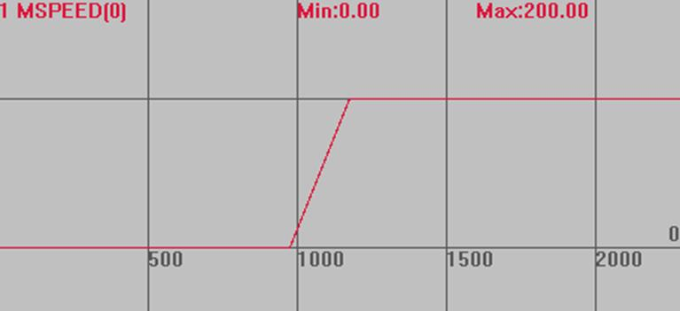
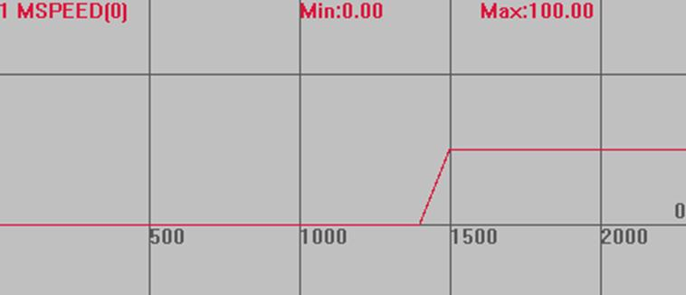

|
类型 |
轴参数 |
|
描述 |
快速点动的输入的编号，-1为无效。
如果设置快速点动输入，速度由SPEED参数给出。如果没有输入设置，速度由JOGSPEED参数给出。见例程。 输入OFF时，认为有信号输入，要相反效果可以用INVERT_IN反转电平(ECI系列控制器除外)。 |
|
语法 |
VAR1 = FAST_JOG，FAST_JOG= expression VAR1 = FAST_JOG(axisnum)，FAST_JOG (axisnum)= expression |
|
适用控制器 |
通用 |
|
例子 |
BASE(0) '选择轴0 DPOS=0 '坐标清0 UNITS=100 ATYPE=1 SPEED=100 '设置速度为100 units/s ACCEL=500 '加速度为500units/s/s JOGSPEED=200 '点动速度设为200units/s FAST_JOG(0)=0 '轴0的快速输入设为IN0口 FWD_JOG(0)=1 '正向点动开关设为IN1口 INVERT_IN(0,ON) '反转电平 INVERT_IN(1,ON) TRIGGER '自动触发示波器
速度曲线 IN0无输入时，按下IN1并保持，轴速度为JOGSPEED=200 MSPEED(0)垂直刻度200 
IN0有输入时，按下IN1，轴速度为SPEED=100 MSPEED(0)垂直刻度200  |
|
相关指令 |